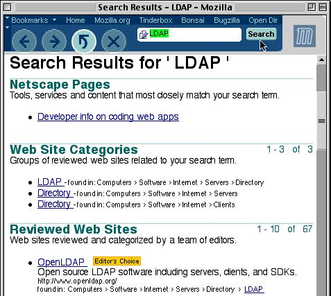
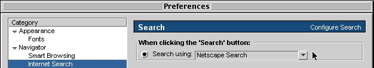
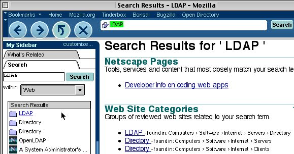
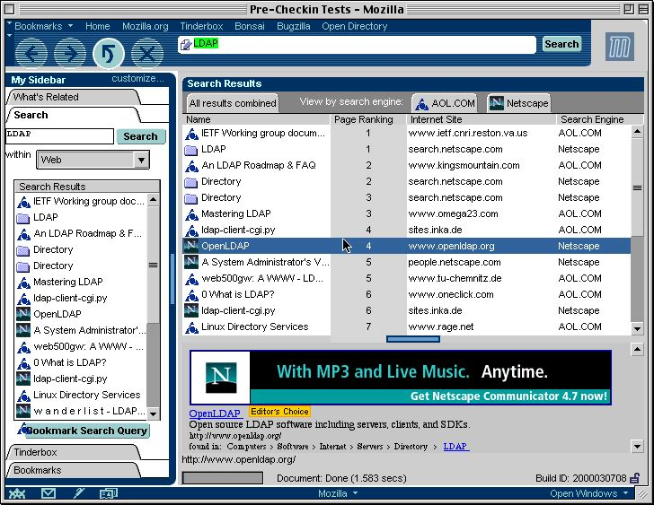
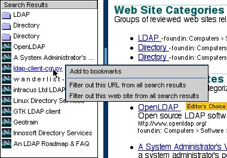

The Search for Mozilla
An Introduction
Document Creation: April 6, 2000
Introduction:
This document describes the core search functionality in Mozilla from a non-technical level. For technical documentation, please see the technical search document.Note: This document contains screenshots from the user interface in
the Mozilla M15 builds.
Overview:
In terms of general web browser usage: after web browsing, the next most common user activity is searching. Whether its using one's favorite search engine or trying out several different engines... when users don't know where to find what they are looking for, they begin by doing a search.In Mozilla, we're striving to accomplish several goals regarding search technology:
o ease of use - beginning/intermediate
users should be able to merely type in some text and begin searching for
results
o extensibility - as no one search
engine can satisfy every user, choice of search engines is important
o flexibility - as users searching
habits advance, so should the abilities of the browser enable more options
o persistence - keep track of the
last set(s) of search results, and provide easy access to them
o power - use multiple categories and search
engines together at the same time, and correlate the search results in
meaningful ways
o usefulness - provide filtering so
that bad/non-useful search results can be removed
Ease of Use
In Mozilla, a search operation can be as basic as typing text into the location bar then clicking on the Search button. For example, to search for "LDAP" using the default search engine:
Extensibility
Mozilla includes various search engines. (On some platforms, such as the Macintosh, this list includes all search engines available with the entire OS.) Users can choose which search engine to use for basic web searching from the location bar by going to the "Internet Search" Preferences panel:
Flexibility
There are many types of users, all with different abilities. As users become more familiar with searching, they'll discover more search functionality available in Mozilla for their use, including the "Search" panel in Mozilla's sidebar:o abbreviated search results are displayed in the "Search" panel
o searches can be done from the "Search" panel as it has an text
input area
o various search categories (which provide organization) and
search engines can be chosen
o searches can be done with one or even more than one search
engine
o search results can be sorted by "page rank" (the order which
the search engine returned the result) or by web page title (both ascending
and descending)
Persistence
After performing a search, its very useful if the results are maintained so that a user can visit one or more of the results, and easily switch in-between them. Mozilla's sidebar contains a "Search" panel which displays a quick list of the last set of search results. Click on one of the results to go to the URL.
Power
Mozilla provides different categories of search engines. For example, a "Web" category might include various popular search engines such as "Netscape Netcenter", "Google", etc. while a "Shopping" category might provide more focused searching such as "Shop@Netcenter", "Shop@AOL", etc. Within any category, Mozilla allows searching one or multiple search engines at once. For example, in the "Web" category a user could search both "AOL.COM" and "Netscape" at the same time by simply choosing both engines:|
|
|
|
|
|
When searching multiple engines, Mozilla correlates the results in an
abbreviated format. Users can sort the information in various ways
by clicking on the column headers, view the entire HTML results from a
single engine by clicking on the search engine tabs, as well as see more
information about individual results by clicking on them:

After performing a search, the query (which includes which engines were
used for the search, as well as what to search for) can be bookmarked for
easy access.
Usefulness
When searching, users are sometimes presented with results with aren't useful to them. Being able to filter out these non-useful results allows Mozilla to build up inference knowledge over time so that search results become more and more valuable. For example, users can bring up context menus on search results to filter out specific URLs or even entire web sites: